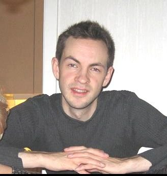

Bakgrund
Anders Robelius heter jag och är född och uppvuxen i Borås. Jag har en mamma och en pappa, som båda är pensionärer, och en sex år äldre bror som jobbar utomlands inom oljebranschen. Som för många andra väcktes mitt intresse för datorer genom spel. En kompis till mig fick under 80-talets andra hälft en Texas Instruments TI-99 som ju var föråldrad redan då, men som ändå imponerade mig enormt. Till denna användes en svartvit TV, och det dröjde flera år innan jag förstod att själva datorn faktiskt var kapabel till att visa färg. Commodore 64 var väl fortfarande den häftigaste grejen under den här tiden och det skulle dröja ett tag innan Amiga 500 tog över. En sådan fick jag under mellanstadiet (min första egna dator) och Amigan var för mig och mina kompisar den stora grejen under några år. Hemma stod också en PC av märket Victor som var pappas arbetsdator till vilken vi även skaffade några spel, men när det gällde grafik och ljud kunde den inte mäta sig med Amigan. Äventyrsspel var det stora intresset. Något senare berättade en kompis en skoldag att han hade börjat göra ett eget litet textbaserat äventyrsspel i GW-basic, vilket han visade hemma direkt efter skolan. Det var en helt fantastiskt känsla att se att det faktiskt var möjligt att göra ett eget spel. Jag tror att det var den dagen som mitt intresse för programmering väcktes.
Min tidga karriär
Under gymnasiet blev det mycket programmering i Turbo-Pascal och när jag gick ut började jag hösten 1998 att praktisera på en liten datafirma, som hette Websaxen. Jag skrev i programspråket Perl och gjorde webbutiker till företag, och gjorde även ett ambitiöst projekt för Vårdhögskolan i Borås. Vi samarbetade lite med ett annat företag i Borås, där ett 20-tal anställda ungdomar direkt från gymnasiet satt och enbart designade webbsidor. En syn som kanske inte är så vanlig idag.
Vidare i livet
Tyvärr så la jag programmeringen åt sidan under många år och ägnade mig åt annat.
- Studerade musikvetenskap i Uppsala:
- Musikhistoria.
- Musikteori.
- Gehörsträning.
- C-uppsats.
- D-uppsats.
- Jobbade i Borås inom skolan med olika uppgifter:
- Fritidspedagog.
- Elevassistent.
- Utbildade mig till lärare i Växjö:
- Svenska och matematik för tidigare skolår.
- Arbetade som resurslärare i Borås:
- Högstadium.
- Veckopendlade på helgerna till Lund.
- Flyttade till Lund och bodde hos flickvän:
- Pendlade under en period till Växjö för att avsluta utbildningen.
- Bodde tillfälligt i Lessebo där jag gjorde praktik.
- Vikarierade på en skola.
- Flyttade tillbaka till Borås och vikarierade på olika skolor:
- Ett längre vikariat var på Byttorpskolan.
- Insåg under denna period att jag ville ha förändring och byta karriär.
- Flyttade tillbaka till Lund en gång till:
- Definitivt beslutade att jag ville tillbaka till datavärlden.
- Vikarierade på en skola i väntan på utbildning.
Detta året
Med den här utbildningen känns det äntligen som att jag har hittat hem igen, även om jag känner att det var ett bra tag sedan nu. Jag mjukstartade genom att i våras plugga "Trådlösa nätverk" som fristående kurs på Högskolan i Skövde. Mina intresseområden inom data och programmering är också breadare än förut och jag är verkligen sugen på att lära mig om olika tillämpningar av dessa, och upptäcka områden som jag vill arbeta med i framtiden. Av någon anledning har jag dock helt tappat intresset för spel.